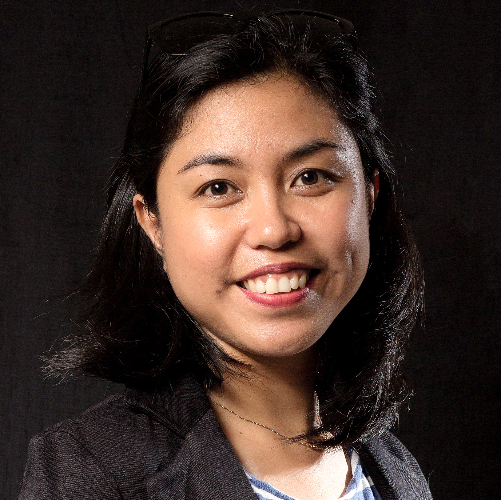

Janneli Lea Soria is a geologist and science educator committed to fostering a sense of wonder about the earth. She obtained her Ph.D. and worked as a Research Fellow at Nanyang Technological University in Singapore. She collaborates with geologists, oceanographers, engineers, and social scientists to investigate coastal hazards such as storm surges, tsunamis, subsidence, and coastal erosion. Through the Balik Scientist Program of the Philippine Department of Science and Technology (DOST), she has developed learning modules and training workshops linking educational institutions, private organizations, and coastal communities in collective action on disaster risk management. Dr. Soria now serves as Director of the JAZC Marine Sciences Laboratory and Earth Science teacher at CVIF in Jagna, Bohol.
Learn more about Lea's STEM journey through her conversation with our Education and Research Fellow, Swastika Issar:
Let's go back in time — could you paint a picture of your childhood?
I grew up in a close-knit community in Isabela, a province in Northern Luzon, the biggest island of the Philippines. We lived in a valley with expansive plains of rice fields and big mountain ranges on both sides. I have two siblings — a brother and a sister — and I'm the eldest of the lot. Growing up, we played outdoors a lot. We didn't have a TV, so our screen time was limited to visits to our neighbors.
When I was little, both my parents worked with the National Irrigation Administration. We had a few hectares of rice fields that we kids would visit from time to time with our dad. Every day before going to school, we would leave our cows and goats to pasture, and after school we'd go collect them from the meadow. During the time I entered elementary school, my mom — who had a background in agricultural engineering — began pursuing her passion for education. She taught at a private school first, then took educational units and cleared the licensure exam.
There was a point in my childhood when my dad was gearing up to travel overseas for work. It was around then that one of the strongest typhoons of that time hit Luzon and forced us to move to a new home. This brought a lot of changes in our lives and perspective. My father decided to continue working with the local government as an agricultural technician until he retired last year.
Tell us about your time as a student — were there any subjects you particularly loved?
I've loved learning ever since I can remember. I was a naturally curious kid, always exploring my surroundings. I'd even sneak out of the house when I was three years old and go to the neighborhood store! As a kid, I didn't like the way history was taught in school, but I loved all my other subjects. In high school, I picked science. I think I gained an interest in it because of my Grade Four teacher, who was passionate about explaining things and making his students understand difficult concepts.
Both my parents had backgrounds in agricultural sciences. My mother taught general science and chemistry in the same school where I studied. Growing up, we had these two massive volumes of an encyclopedia that we would browse for fun. I remember looking at pictures of the Grand Canyon and wanting to go there someday. I also grew up reading the Reader's Digest. All this helped expose me to a lot of different kinds of knowledge.
How did you end up studying geology and coastal hazards?
I was drawn to earth science because it feels so tangible. The Philippines is one of the most geologically active places on Earth — we have volcanoes, earthquakes, tsunamis. We are on the Pacific Ring of Fire and in the typhoon belt. The question of how communities can understand and prepare for natural hazards feels both scientifically fascinating and urgently important.
During my PhD at Nanyang Technological University in Singapore, I focused on coastal hazards — particularly storm surges, tsunamis, and coastal erosion. Then I came home. Through the DOST Balik Scientist Program, I was able to bring that expertise back to the Philippines, working with communities and educational institutions on disaster risk management. It felt like the right thing to do.
What brings you to CVIF and to science education?
In 2020, I joined CVIF as Director of the JAZC Marine Sciences Laboratory and as the Earth Science teacher for Senior High School. Teaching at CVIF is one of the most rewarding things I've ever done. The students here are exceptional — curious, resilient, and deeply connected to the natural environment around them. Jagna is right on the coast of Bohol, and having the ocean literally next to the school makes Earth Science and marine science come alive in a way that's very hard to replicate in a textbook.
I want my students to see themselves as scientists — as people who can ask rigorous questions about the world and build evidence-based answers. For a country like the Philippines, where we face real and growing threats from climate change and natural disasters, that kind of scientific literacy isn't just academic. It's survival.
More from the Filipinas in STEM series:
- Cassidy Childs — Climate Policy and Filipino Roots
- Cynthia Garcia-Eidell — Satellite Science and the Ocean
- Faye Romero — Evolutionary Biologist
- Reinabelle Reyes — Data Science, Physics & Community
- Iris Bea Ramiro — Cone Snails, Copenhagen & Beyond
- Ariane Peralta — Microbiologist, East Carolina University
- Hyacinth Suarez — Marine Biologist, Bohol